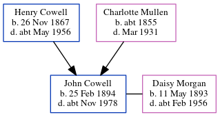

Caroline Grace Cowell c1890 -
[ Home ] | [ Calendar ] | [ Surnames Index ] | [ Errors ] | [ Family History ]The child of Henry Cowell (a shepherd) and Charlotte Mullen, Caroline Cowell, the second cousin twice-removed on the mother's side of Nigel Horne, was born in East Malling, Kent, England c. 18901,2.
During her life, she was living on Lunsford Lane in East Malling on 5 Apr 18913; and in Larkfield, Kent, England in 19012.
Parents
- Henry John was born on 26 Nov 1867
- Charlotte was born c. 1855
Citations
- 1891 England Census Online publication - Provo, UT, USA: The Generations Network, Inc., 2005.Original data - Census Returns of England and Wales, 1891. Kew, Surrey, England: The National Archives of the UK (TNA): Public Record Office (PRO), 1891. Data imaged from The National
- 1901 England Census Online publication - Provo, UT, USA: The Generations Network, Inc., 2005.Original data - Census Returns of England and Wales, 1901. Kew, Surrey, England: The National Archives of the UK (TNA): Public Record Office (PRO), 1901. Data imaged from the National (Relation to Head of House: Daughter)
- 1891 England, Wales & Scotland Census - Findmypast (was age 1 and the daughter of the head of the household)
Family Tree
Map
Generated by ged2site. Last updated on Jul 3, 2024
Known Issues
Date of residence (1901) differs from mother's in same year (31 Mar 1901)
1901: Not living with either parent in childhood when aged 11